Week 2: 2D/3D Design
Lab Box
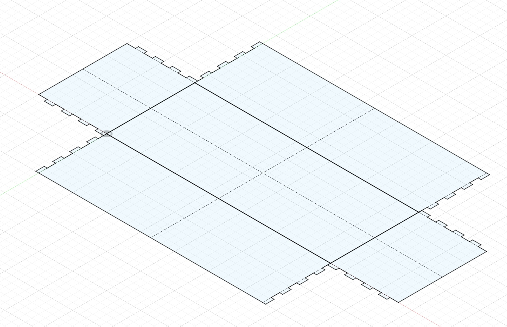
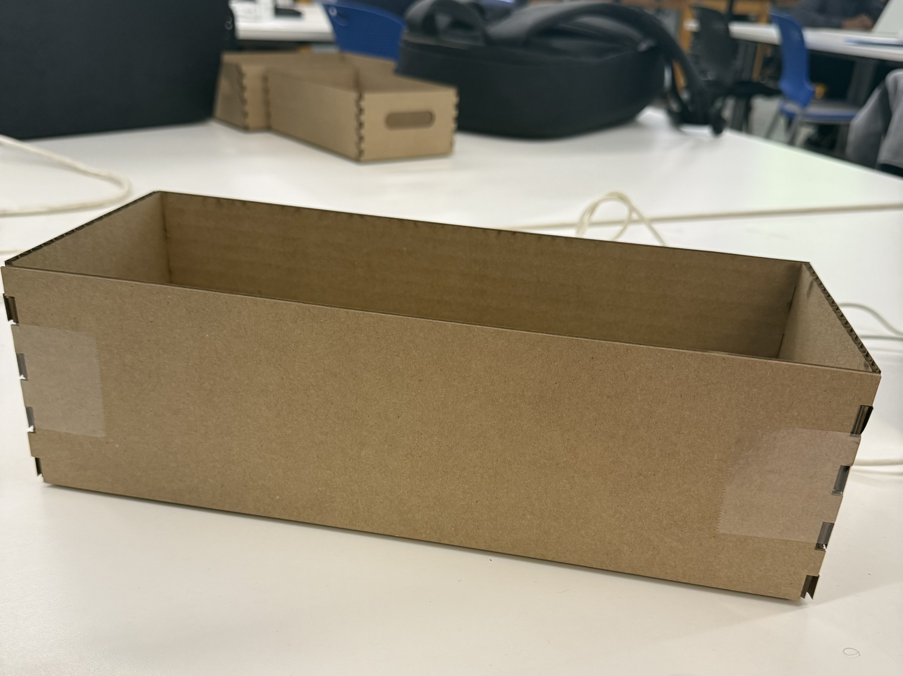
A simple cardboard box to store my lab components; the catch was making the parametric model actually scale without breaking. I watched a lot of students in lab (myself included) try to tweak a parameter and watch the whole sketch fall apart.
I rebuilt mine four times, getting faster each pass, until I understood why it kept breaking. The gist:
- Start sketch entity with constraint to origin; not just to its neighbors
- Constrain relationships between entities too (coincident, equal, parallel)
- Use rectangular patterns instead of duplicating geometry; the pattern carries the constraints through on mirrors
- Mirror all the related geometries
Now any parameter scales cleanly.
- lab_box.f3d — Fusion 360 source
Vector Drawing
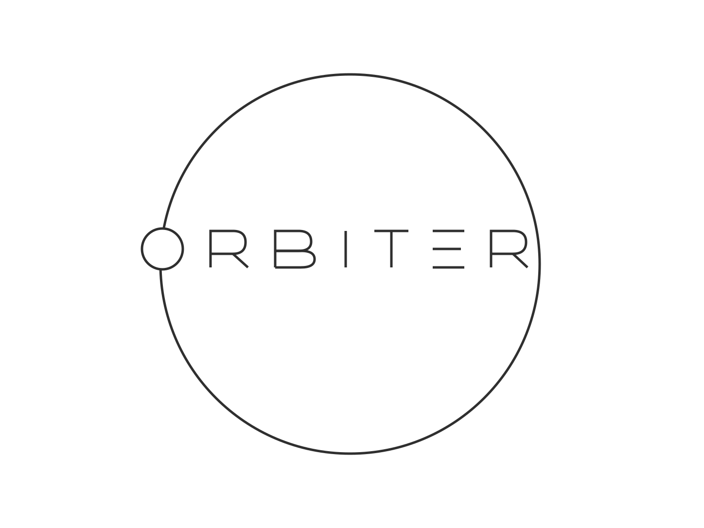
orbiter is my handle in my favorite game, generals.io; it's a real-time version of Risk with fast-paced mechanics and resource management. I use this handle in other projects too, so I drew a logo for it. I'll affix this to my box with an engraved or scored laser cut cardboard panel.
Fusion 360 Tutorial
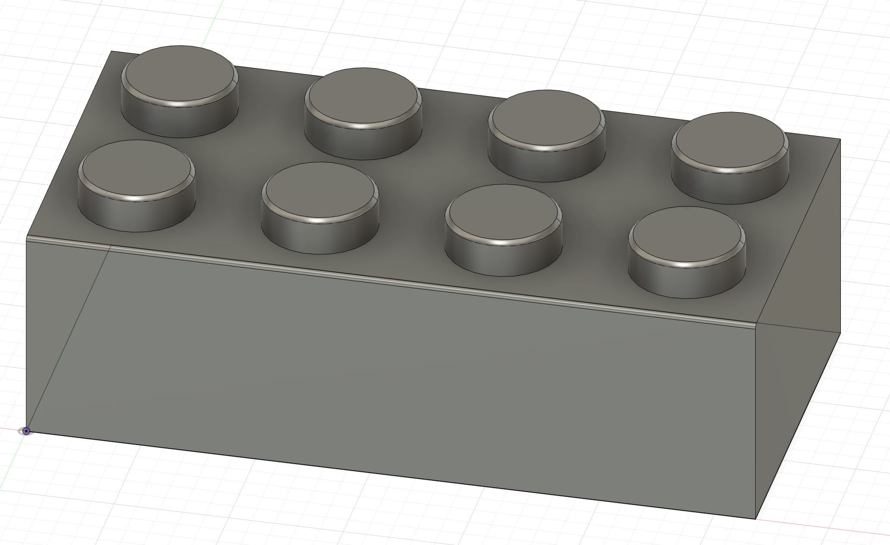
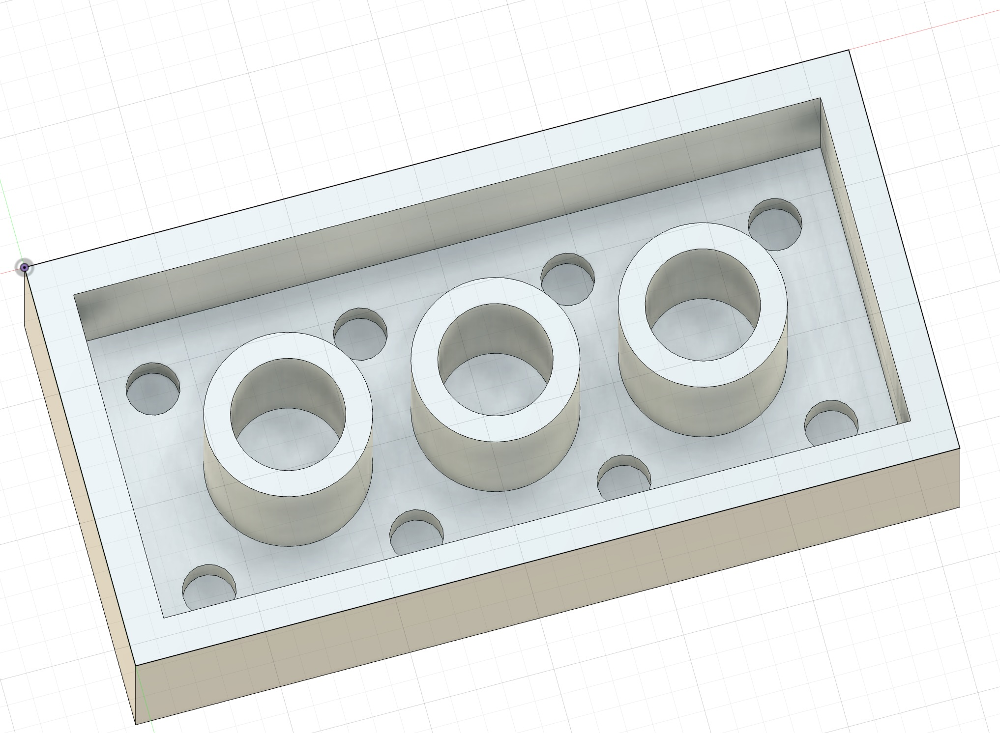
This was a Fusion 360 tutorial modeling a LEGO brick — a fun way to get familiar with sketches, extrusions, and patterns.
- toy_block.f3d — Fusion 360 source
- toy_block.stl — mesh export
MBTA Coaster

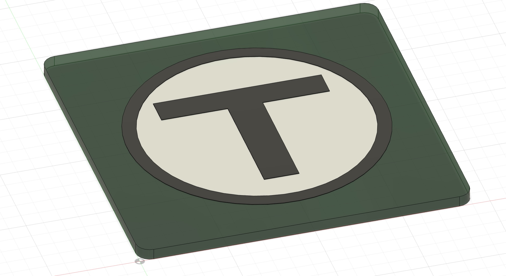
A coaster set I got back in the day based on the MBTA train color lines. I rode the Green Line a lot when I commuted to and from work in Cambridge.
- mbta_coaster.f3d — Fusion 360 source
- mbta_coaster.stl — mesh export
Wrist Rest
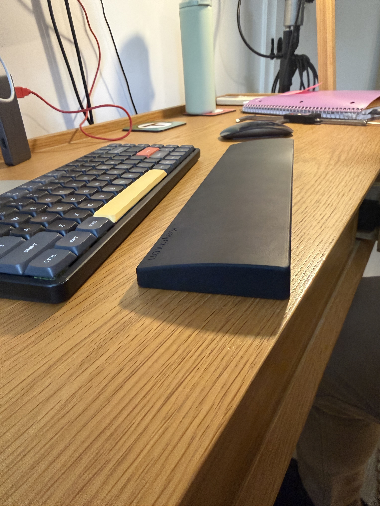
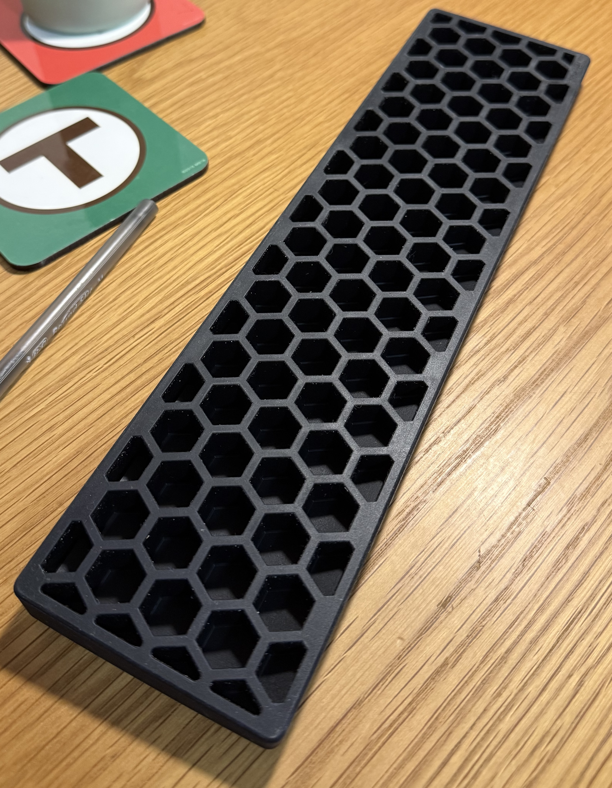
A wrist rest I needed to use when I got a mechanical keyboard due to its height. One side is lower than the other, so it isn't a perfect rectangle.
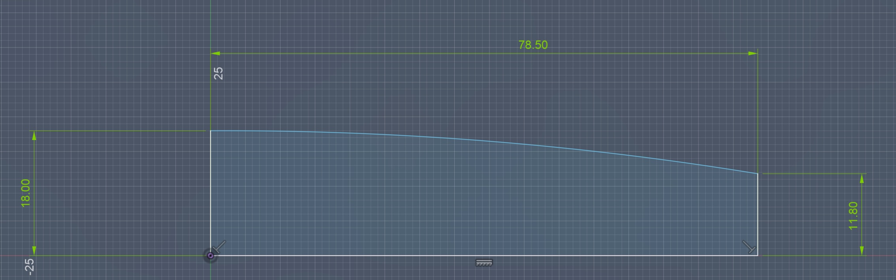
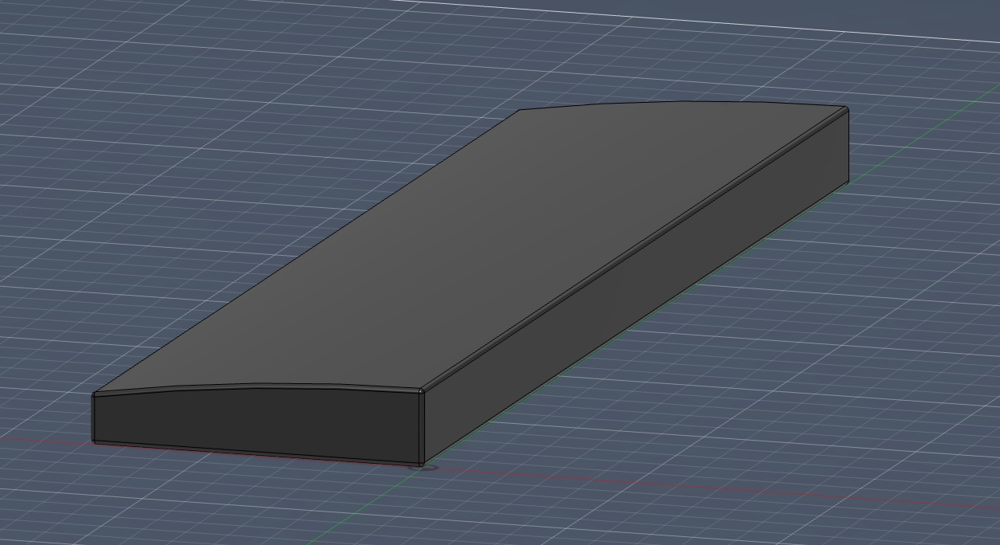
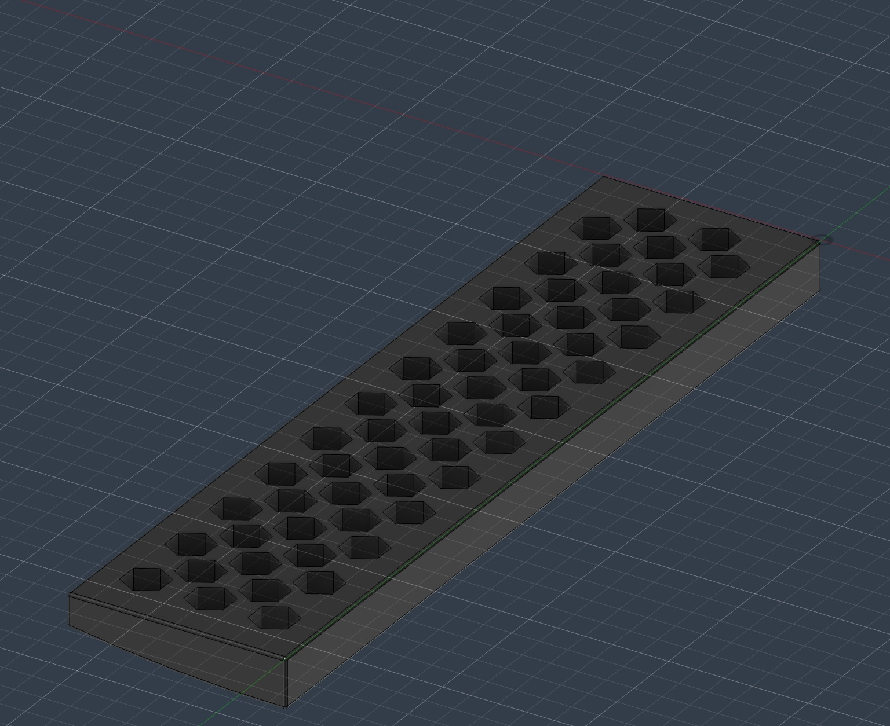
- wrist_rest.f3d — Fusion 360 source
- wrist_rest.stl — mesh export